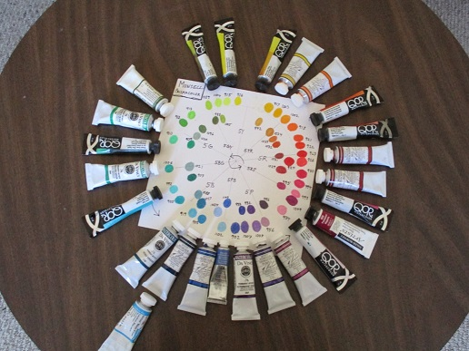
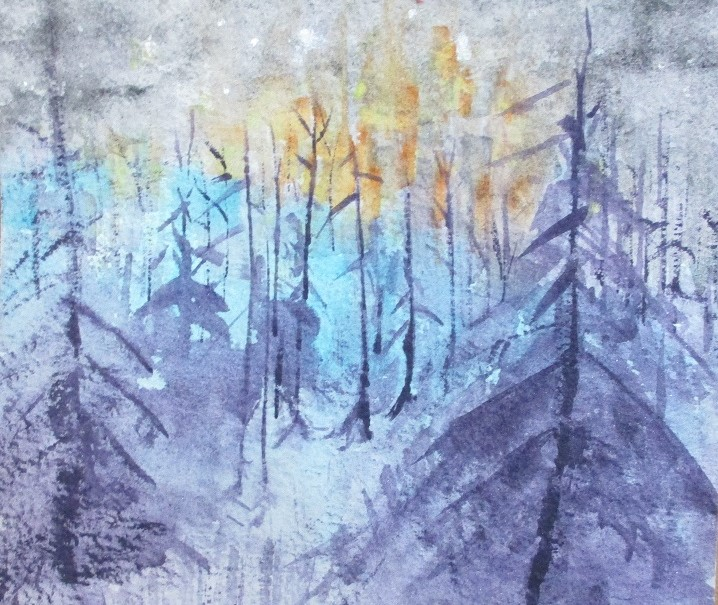
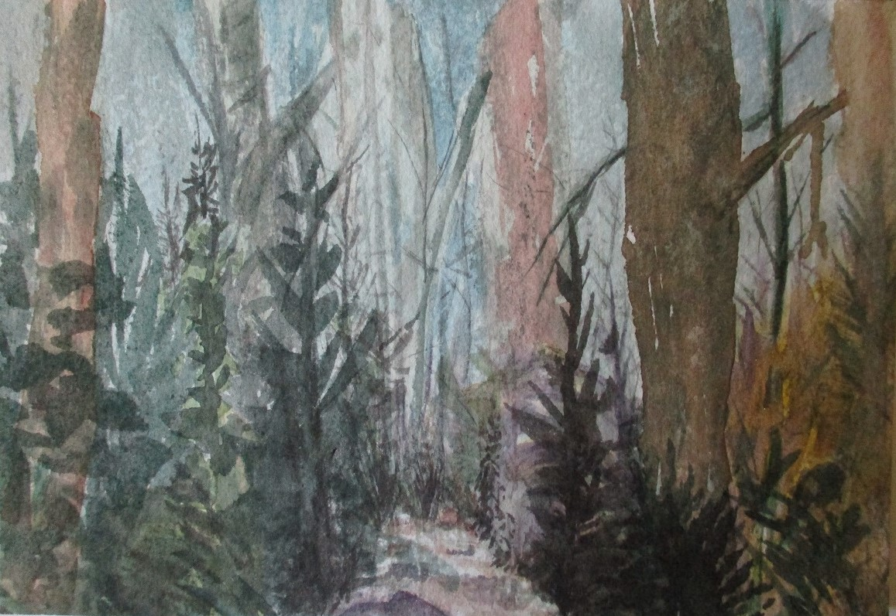
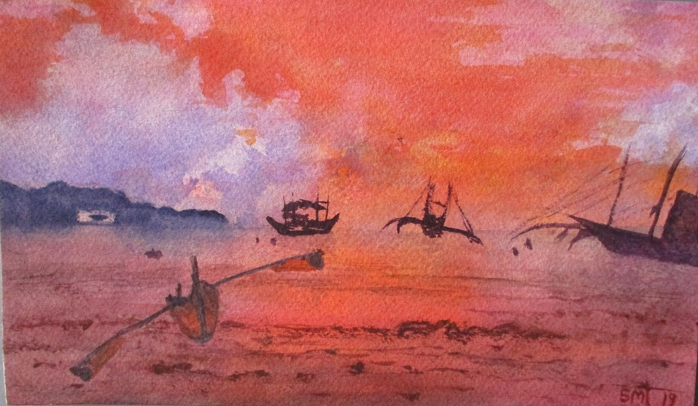
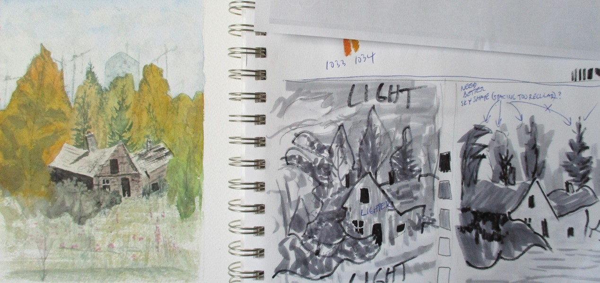

Art and Colour Theory
   
My Munsell colour viewer.
My main watercolour palette setup.
My lightweight post about the Golden ratio.

Stephen Quiller online images.
Jasmine Huang and Chien Chun Wei online images.
Handprint. A lot of general info, much of it geared toward watercolour.
HueValueChroma. Colour theory and practice.
A great Munsell viewer.
Farnsworth 100 colour test.